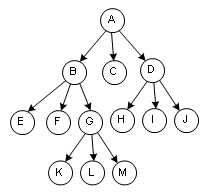
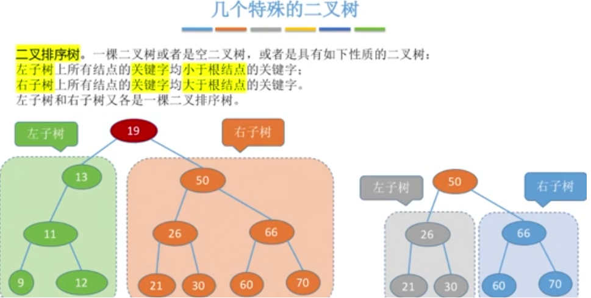

树/二叉树/霍夫曼编码
==========================================================
学习数据结构时，从3个方面进行：
1 逻辑结构
2 功能(运算)
3 物理结构
树的逻辑结构
树的定义:树是数据元素之间具有层次关系的非线性结构，是由n个节点构成的有限集合，节点数为【0】的树叫空树。
【树是一种
 树必须满足以下条件：
1 有且仅有一个根节点
2 其余节点可分为m个互不相交的有限集合，每个集合又构成一棵树，叫根节点的子树。
树必须满足以下条件：
1 有且仅有一个根节点
2 其余节点可分为m个互不相交的有限集合，每个集合又构成一棵树，叫根节点的子树。
树相关概念:
1 节点的度：一个节点含有的子树的个数称为该节点的度；
2 树的度：一棵树中，最大的节点度称为树的度；
3 叶节点或终端节点：度为零的节点；
4 非终端节点或分支节点：度不为零的节点；
5 父亲节点或父节点：若一个节点含有子节点，则这个节点称为其子节点的父节点；
6 孩子节点或子节点：一个节点含有的子树的根节点称为该节点的子节点；
7 兄弟节点：具有相同父节点的节点互称为兄弟节点；
8 节点的层次：从根开始定义起，根为第1层，根的子节点为第2层，以此类推；
9 深度：对于任意节点n,n的深度为从根到n的唯一路径长，根的深度为0；
10 高度：对于任意节点n,n的高度为从n到一片树叶的最长路径长，所有树叶的高度为0；
11 堂兄弟节点：父节点在同一层的节点互为堂兄弟；
12 节点的祖先：从根到该节点所经分支上的所有节点；
13 子孙：以某节点为根的子树中任一节点都称为该节点的子孙。
14 森林：由m（m>=0）棵互不相交的树的集合称为森林；

注意：除了根节点外，树的每个节点【有且仅有】一个前驱，根节点没有前驱
思考：度为m的树，和m叉树的区别?三叉树的度一定为3吗？
树的种类[谁在左边，谁在右边，是有规定的，这棵树称为有序树；反之称为无序树。]：
-无序树：树中任意节点的子节点之间没有顺序关系，这种树称为无序树，也称为自由树。
-有序树：树中任意节点的子节点之间有顺序关系，这种树称为有序树；
-- 二叉树：每个节点最多含有两个子树的树称为二叉树；
--- 完全二叉树：
---- 满二叉树：所有叶节点都在最底层的完全二叉树；
--- 平衡二叉树（AVL树）：当且仅当任何节点的两棵子树的高度差不大于1的二叉树；
--- 排序二叉树(二叉查找树（英语：Binary Search Tree));
-- 霍夫曼树 ：带权路径最短的二叉树称为哈夫曼树或最优二叉树；
二叉树：二叉树是n(n≥0)个节点的有限集合;
或者为空二叉树；
或者由一个根节点和两个互不相交的被称为根的【左子树】和【右子树】组成。
左子树和右子树分别是一颗二叉树。
三叉树、四叉树...

二叉树是有序树
几种特殊的二叉树:
满二叉树[长满了的完全二叉树]：高度为h的二叉树，且包含2^h-1
1) 只有最后一层有叶子结点
2) 不存在度为1的结点
3) 按层序遍历的方式从1开始编号，结点i的左孩子为2i，右孩子为2i+1,父结点是?
完全二叉树：当且仅当每个结点都与高度为h的满二叉树中编号为1-n的结点一一对应时，称为完全二叉树。
并且完全二叉中，仅有一个度为1的结点
二叉排序树

平衡二叉树
二叉树的存储结构:
1 顺序存储
2
二叉树的顺序存储
如果一棵二叉树不是完全二叉树，如何进行顺序存储？
***二叉树的链式存储
无论这棵二叉树是否为完全二叉树，操作起来都很方便。
二叉树常见的操作之一：遍历
根据二叉树的递归性质，有三种遍历规则：
【1】 先序遍历：根 左右,NLR,也叫先根遍历.
【2】 中序遍历：左根 右,LNR,也叫中根遍历.
【3】 后序遍历：左右根 ,LRN,也叫后根遍历.
霍夫曼树
了解一个概念：带权路径长度
 哈夫曼树：也叫最优二叉树，在含有n个带权叶子结点的二叉树中，带权路径长度(WPL)最小的二叉树称为哈夫曼树。
哈夫曼树：也叫最优二叉树，在含有n个带权叶子结点的二叉树中，带权路径长度(WPL)最小的二叉树称为哈夫曼树。
哈夫曼树：也叫最优二叉树，在含有n个带权叶子结点的二叉树中，带权路径长度(WPL)最小的二叉树称为哈夫曼树。
哈夫曼编码练习:
求下列字符串的哈夫曼编码
字符串:A_DEAD_DAD_CEDED_A_BAD_BABE_A_BEADED_ABACA_BED
作业：
1 编写代码求斐波拉契数列，计算代码的时间复杂度。【提示：可以用递归或for循环】
*2 将你姓名的拼音的大写重复3倍后，得到字符串n，求s的霍夫曼编码nh。
例如：姓名张三，n=ZHANGSANZHANGSANZHANGSAN，求n的霍夫曼编码nh。
3 将上面得到的霍夫曼编码nh还原成n。
*4 手算下列二叉树的遍历结果参考答案
5 编码完成第2、第4题。